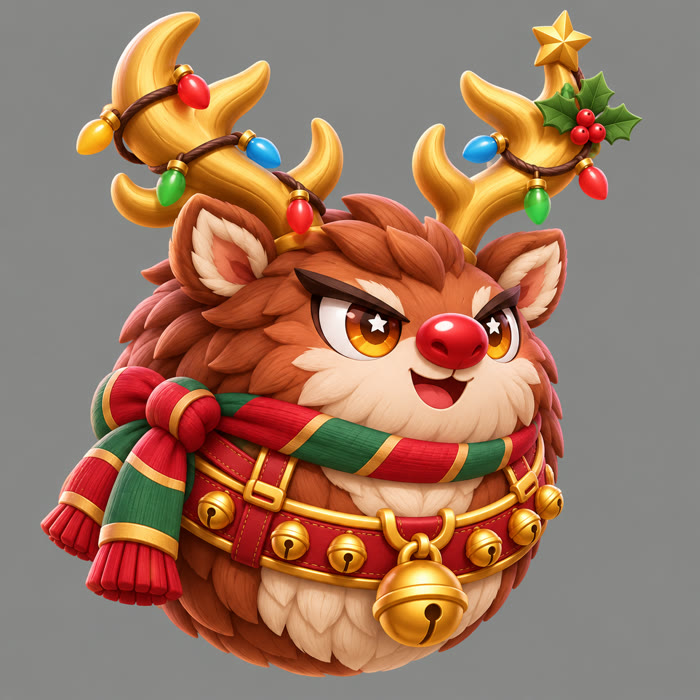
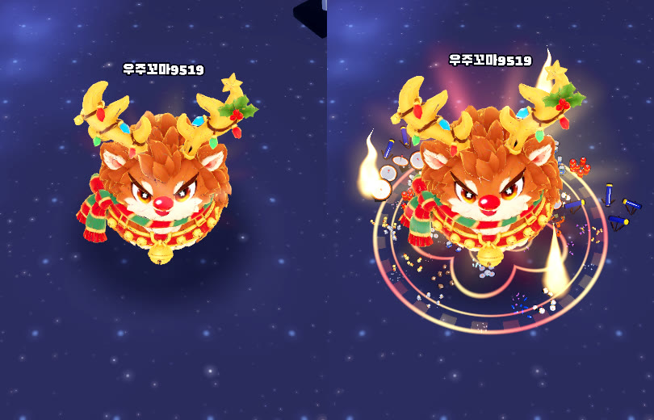
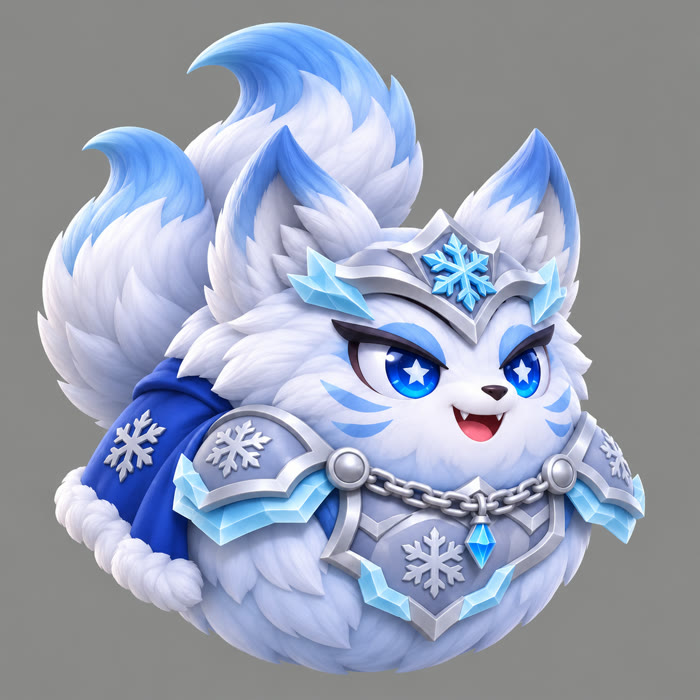
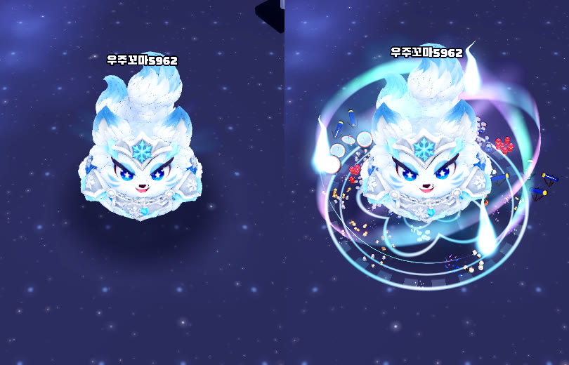

빨간 코 루돌프·얼음 기사 여우 — 게임 화면
2026년 11월 25일. 콘셉트 그림(OpenAI gpt-image-2 생성)을 Meshy로 3D 모델로 바꿔 게임에 넣은 결과입니다. 영상은 자동 플레이 55초입니다.
빨간 코 루돌프
플레이 영상

콘셉트 그림

판 시작 / 최종 단계
금빛 마법진과 따뜻한 불꽃
얼음 기사 여우
플레이 영상

콘셉트 그림

판 시작 / 최종 단계
얼음빛 마법진, 푸른 서리 불꽃, 오로라 띠